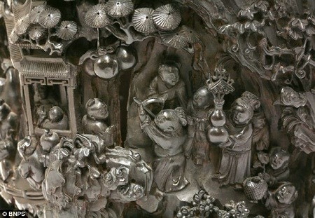

Bài viết này mình xin chia sẻ một số lưu ý khi mua đồ gỗ cổ , gỗ xưa mà mình chắt lọc được trong những năm đi sưu tầm
Bài viết này mình xin chia sẻ một số lưu ý khi mua đồ gỗ cổ , gỗ xưa mà mình chắt lọc được trong những năm đi sưu tầm . Hy vọng với những chia sẻ này có thể giúp các Bạn yên tâm hơn trong việc lựa chọn những món đồ mà mình thích và rất mong nhận được những phản hồi , góp ý của mọi người để bài viết và kiến thức của mình được hoàn thiện hơn .
Tốt gỗ hơn tốt nước sơn , đúng như vậy , từ ngày xưa khi dựng đồ các cụ đã rất chú trọng đến việc sự dụng loại gỗ gì. Đồ gỗ cổ, gỗ xưa luôn được làm từ các loại gỗ trong nhóm 1 và nhóm đặc biệt quý hiếm như : Sưa – Trắc – Cẩm – Gụ Mật – Lim – Hương – Mun – Gỗ Đỏ.
Nếu các bạn đi sưu tầm mà gặp những món đồ làm bằng các loại gỗ nhóm khác , gỗ tạp như : muồng , tràm , trai , sến , táu thì bạn nên cân nhắc kĩ xem có lên mua hay không . Có thể là đồ giả cổ hoặc đồ của thợ tay ngang – thường có giá trị không cao.
Về chất gỗ thì các bạn phải quan tâm đặc biệt đến ten gỗ : Là màu của gỗ , đồ gỗ cổ , gỗ xưa thì phải có ten thời gian và xuống màu . Nhìn kĩ mặt trên và so sánh với các sản phẩm sâu tuổi mà mình đã được ngắm . Và dùng đèn pin chiếu xuống gầm để nhìn kĩ khe kẽ xem đã xuống màu hết chưa . Vì đồ giả cổ thường sẽ có sai xót ở dưới gầm .
Việc ngày càng nhiều con tàu đắm được phát hiện và những cổ vật của nó ngày càng có giá trên thị trường, khiến nhiều người tin rằng hễ có hào bám, rong rêu, trầm tích bám trên hiện vật thì đảm bảo rằng chúng là đồ cổ đã nằm sâu dưới biển hàng mấy trăm năm về trước.
Sự thật là bọn giả cổ chỉ cần ngâm đồ mới xuống dưới biển, dưới ao hồ, bùn lầy khoảng vài tháng là khi vớt lên thì đã đầy những trầm tích, hào bám khá chắc. Cho nên chúng ta đừng quan trọng việc có trầm tích , có vết hào bám bên ngoài hay không, mà cần xem bản thân hiện vật .
Đồ gỗ cổ cũng như đồ cổ , ai chơi cũng muốn hàng của mình là độc , đẹp và ít bị đụng hàng vì thế các quý vật làm từ gỗ mà có kiểu dáng lạ , dáng độc thì luôn có giá trị cao hơn rất nhiều. Và những món đồ mới làm theo mẫu cổ mà không đạt yêu cầu thì giá trị rất thấp, điển hình như bộ Luois gỗ mun này , cho dù có đánh màu giả cổ giỏi cỡ nào nhưng với kiểu dáng thô và nét chạm xấu này thì nhận ra ngay là đồ giả cổ, thợ tay ngang làm .
Dáng Lạ – Dáng độc : Nhưng phải theo các nguyên tắc cơ bản của lối đồ hay dòng đồ đó , như đồ tàu thì không thể chạm hoa lá tây, chạm tiếng Lating và đồ tây thì hông thể chạm rồng , chạm chữ Hán vào . Năm ngoái mình có coi một cái tủ Luois gỗ Trắc chủ nhà cam kết chuẩn cổ – hơn 100 năm , mình nhìn ten gỗ chưa già đồ, hoa văn đục chạm thì lại thấy có chạm Dơi Ngậm Đồng Tiền ( Phúc ngậm kim tiền ) ở góc tủ , mình nói là đồ lai căng – không chuẩn cổ – thì chủ nhà mới chịu thua.